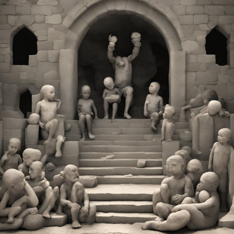

Lo que no sabían es que al joven ya no le interesaban las monedas de oro ni que le pidieran disculpas. Después de llevarse a los niños a la cueva, el flautista los hipnotizó con su melodía mágica y los convirtió en estatuas de piedra, dejándolos inmóviles en el interior de la cueva para siempre. Los padres de los niños, angustiados, buscaron desesperadamente a sus hijos, pero lo único que encontraron fue la cueva con los cuerpos de sus hijos petrificados. La ciudad de Hamelín, desesperada y culpable, intenta de todo para romper el hechizo, pero todos sus esfuerzos son en vano.
Con el tiempo, Hamelín cae en la miseria, asolada por la tristeza y el remordimiento. Los habitantes, incapaces de olvidar la pérdida de sus hijos y su traición al flautista, comienzan a abandonarla poco a poco. La ciudad, antaño próspera, se convierte en un pueblo fantasma, con casas desiertas y calles vacías, donde solo el viento y los ecos de risas infantiles perdidas resuenan entre las ruinas.
A medida que pasan los años, la cueva se convierte en un lugar maldito, evitado por todos. Se dice que, en noches de luna llena, se puede escuchar la triste melodía del flautista y los susurros de los niños petrificados, recordando a todos la terrible consecuencia de la avaricia y la falta de palabra.
